Welcome to the Codex
Grimeage の世界への総合ガイド ― 公式コーデックス（grimeage2.com/codex）の日本語訳。ゲームにも公式サイトにも日本語がないため、ここに日本語で残す。デザインと画像は可能な限り公式に寄せている（画像は公式のものを使用）。
Guides ― ガイド
🛡️ Classes ― クラス一覧
5種族・48クラス。クラスを選ぶと固有スキルが見られる（公式）。ここでは全クラスの一覧と説明を翻訳し、ネクロマンサーは詳細まで掲載。肖像画は公式のものを使用（一部の基本クラスは系統の肖像で代用）。
ヒューマン
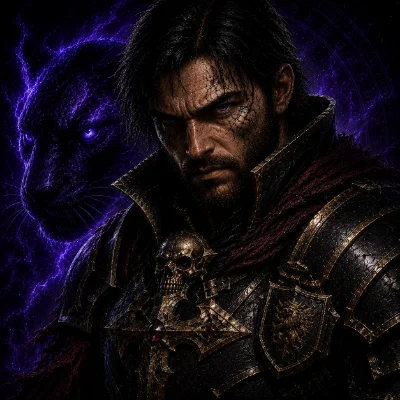
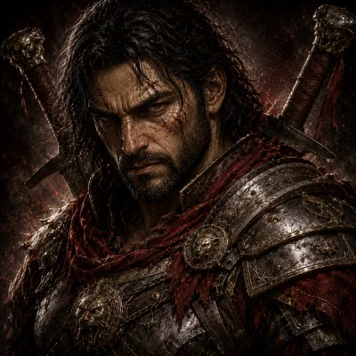
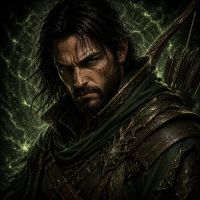
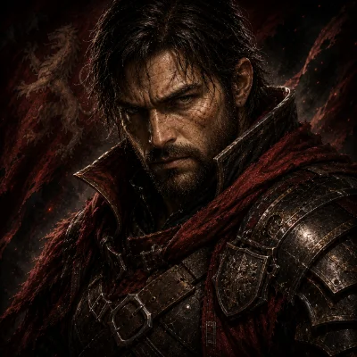
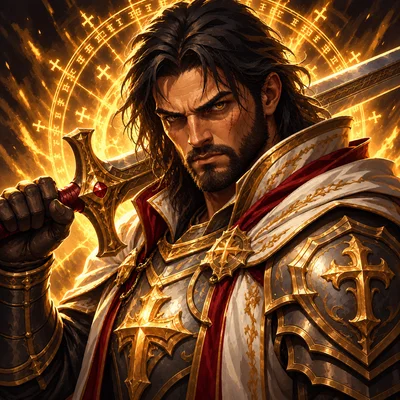
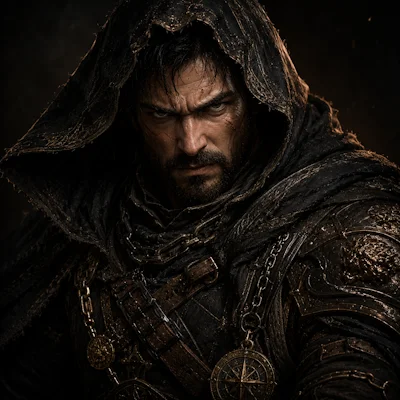
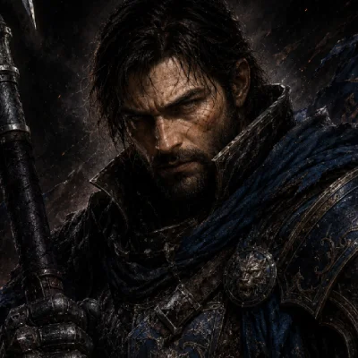
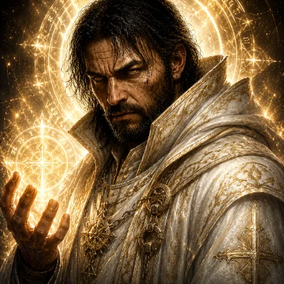
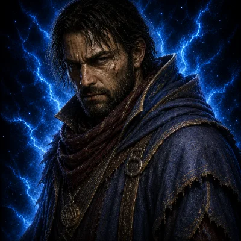
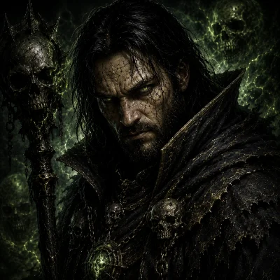
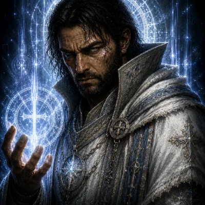
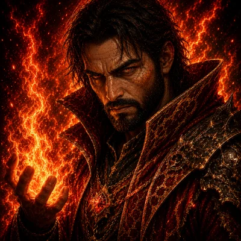
エルフ
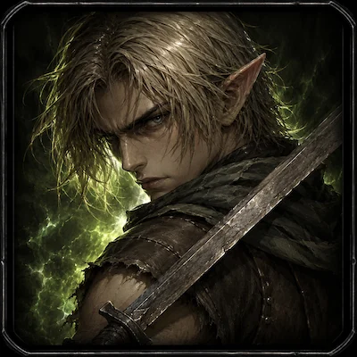
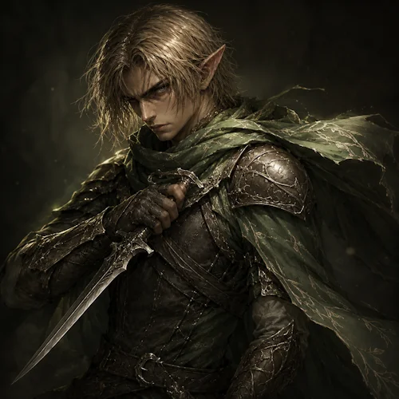
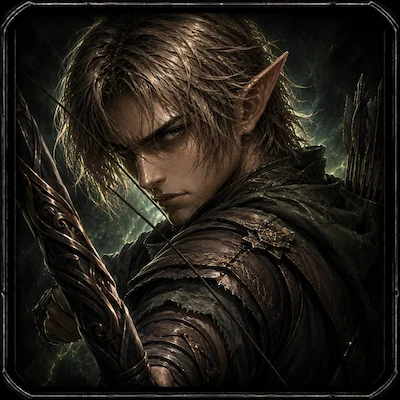
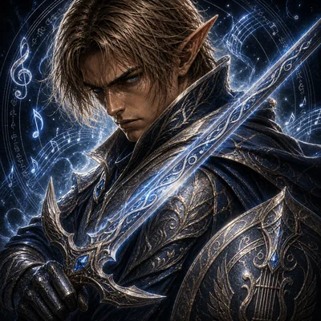
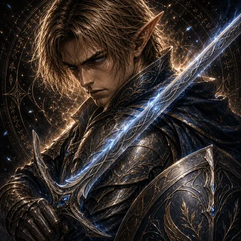
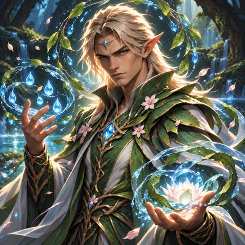
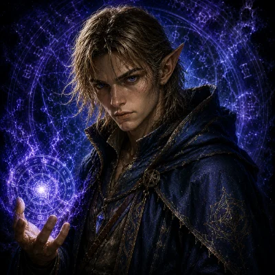
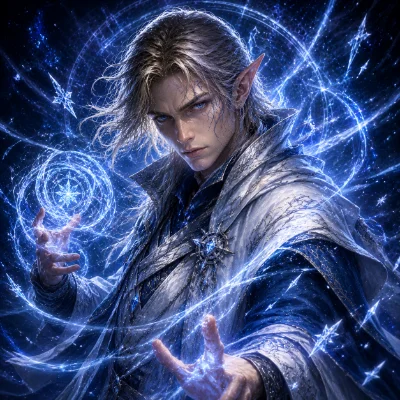
ドワーフ
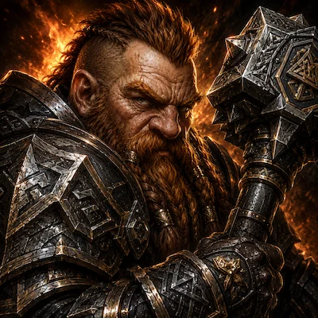
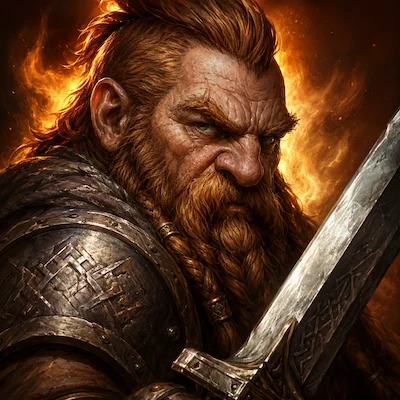
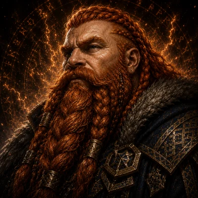
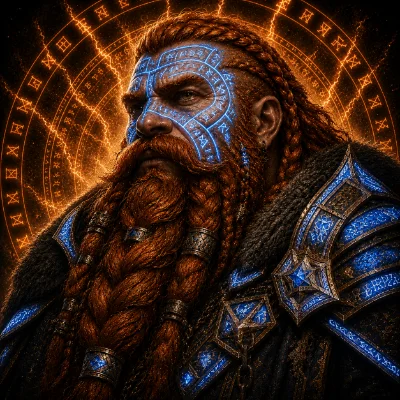
オーク
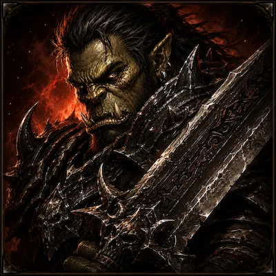
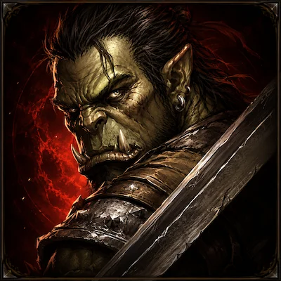
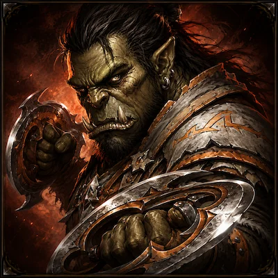
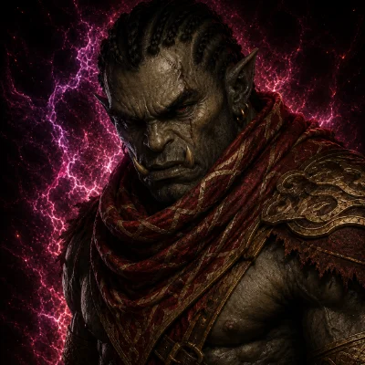
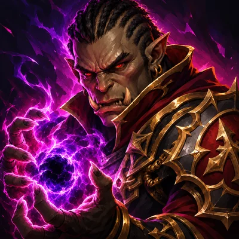
ダークエルフ
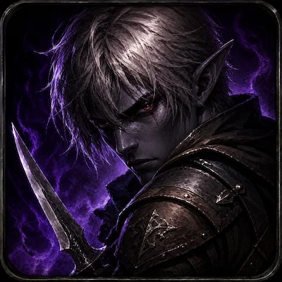
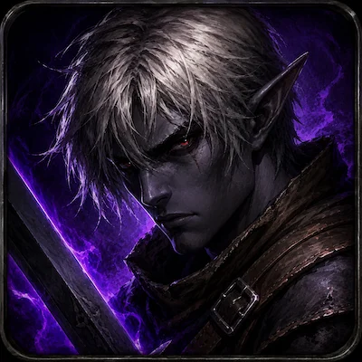
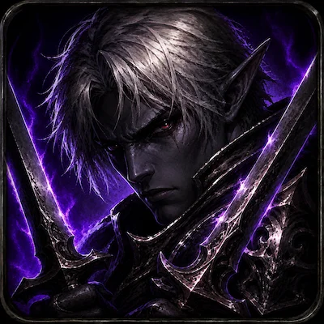
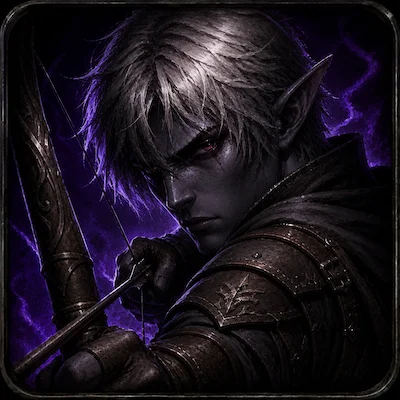
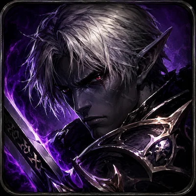
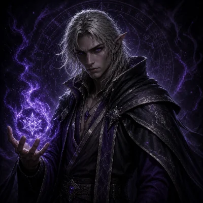
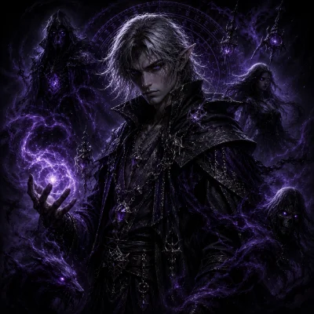
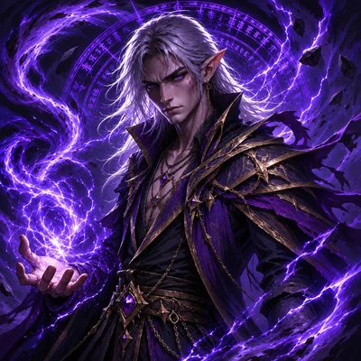
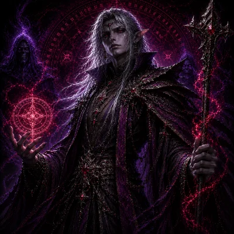
Necromancer ― ネクロマンサー詳細
生命力を吸い取り、骨の魔法で身を守る闇の術者。
アセンションスキル（アクティブ）
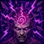
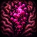
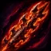
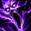
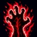
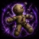
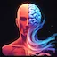
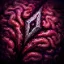
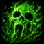
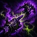
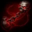
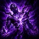
パッシブ（名称のみ確認済み、説明は追って追加）：Power of Soul／Greater Focus／Arcane Power／Greater Critical Boost。ほかに Unholy Aura、Corpse Explosion、Vampiric Touch、Curse: Gloom の存在を公式ページで確認済み（説明は取得中）。